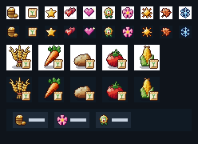
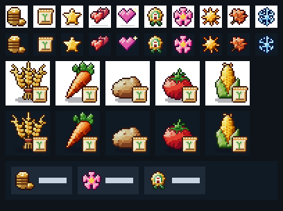
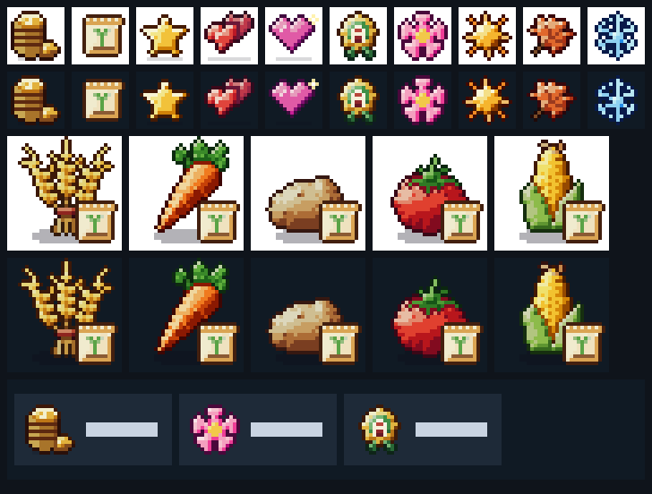
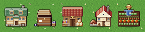
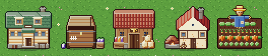

currency/goldfarm/seed-packetfarm/starfarm/heart-bondfarm/heart-affinityfarm/rankseason/springseason/summerseason/autumnseason/winterOriginal pixel art drawn from code in scripts/pixel-art (uma-platform P126): ten 16px marks in uma-art's ui sheet and two 48px places on the buildings sheet's farmlands page. Part B, the cast's three busts, adds its section here when ChatGPT draws it.
currency/goldfarm/seed-packetfarm/starfarm/heart-bondfarm/heart-affinityfarm/rankseason/springseason/summerseason/autumnseason/winterRows: the ten marks on white, then on the account bar's navy; the badge over wheat, carrot, potato, tomato and corn on white, then navy; a mock account bar with the gold, season and Farm Rank chips.

Rows: the ten marks on white, then on the account bar's navy; the badge over wheat, carrot, potato, tomato and corn on white, then navy; a mock account bar with the gold, season and Farm Rank chips.

Rows: the ten marks on white, then on the account bar's navy; the badge over wheat, carrot, potato, tomato and corn on white, then navy; a mock account bar with the gold, season and Farm Rank chips.

Dorm, shipping bin, then the Pantry, Kitchen and Fields they stand beside, on farmlands ground.

Dorm, shipping bin, then the Pantry, Kitchen and Fields they stand beside, on farmlands ground.
